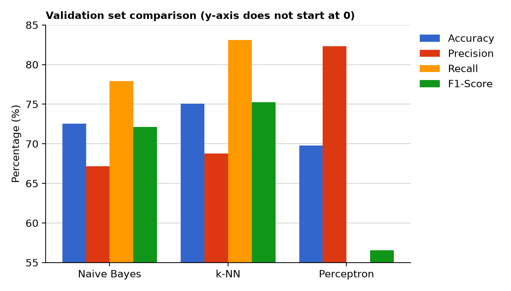
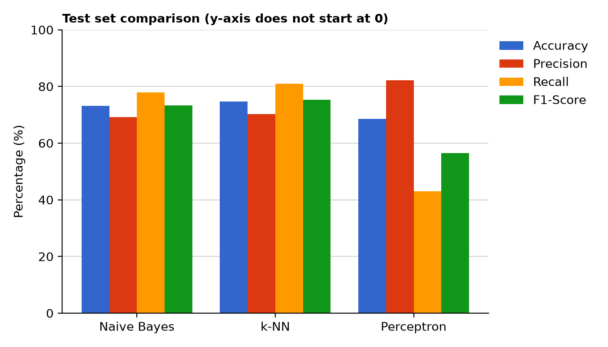
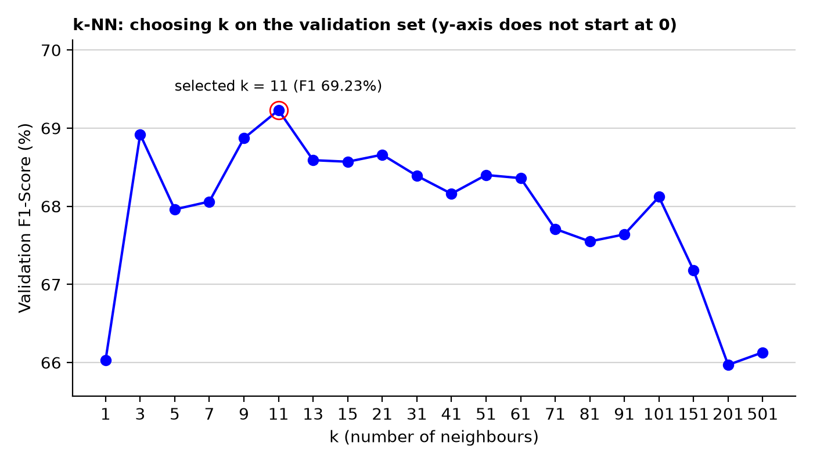
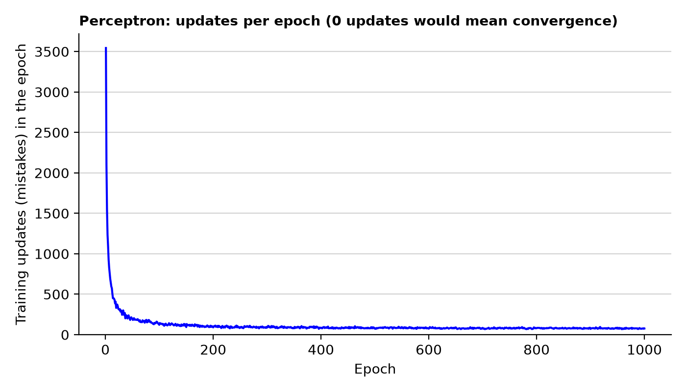

1. Problem Statement and Motivation
Online political discourse in the Philippines frequently involves a mix of Filipino, English, and code-switched Taglish. During high-stakes events such as national elections, social media platforms see a surge in targeted harassment, insults, and hate speech. Moderating this content manually is unscalable, yet off-the-shelf moderation models are predominantly trained on standard English and struggle with Philippine linguistic nuances.
Task Definition: We frame this problem as a supervised binary text classification task. Given a raw tweet in Filipino or Taglish, the model must classify it as either Non-hate (0) or Hate (1). To understand how different learning paradigms handle sparse, code-switched text, we implement and compare three classical machine learning algorithms completely from scratch: Multinomial Naïve Bayes, k-Nearest Neighbors (k-NN), and the Perceptron.
2. Dataset Description and Preprocessing
Source & License: We use the raw version (hatespeech_raw.zip) of the Filipino Hate Speech Dataset released by Cabasag et al. (2019) on Hugging Face under the Apache-2.0 license. The corpus consists of 18,464 tweets collected during the 2016 Philippine presidential election.
Target Labels: Each instance is annotated with a binary target label (Cruz and Cheng, 2020): 0 for non-hate and 1 for hate. In our inspection of the corpus, label 1 generally marks hostile or insulting posts aimed at political candidates or parties, whereas label 0 covers news updates, poll results, neutral questions, and supportive commentary. Profanity alone does not determine the label.
| Split | Total Tweets | Share | Non-hate (0) | Hate (1) |
|---|---|---|---|---|
| Train | 10,000 | 54.2% | 5,340 (53.4%) | 4,660 (46.6%) |
| Validation | 4,232 | 22.9% | 2,299 (54.3%) | 1,933 (45.7%) |
| Test | 4,232 | 22.9% | 2,225 (52.6%) | 2,007 (47.4%) |
| Total | 18,464 | 100% | 9,864 (53.4%) | 8,600 (46.6%) |
From-Scratch Preprocessing Pipeline
- Text Cleansing: Every tweet is lowercased, URLs and
@mentionsare stripped, non-alphanumeric characters (excluding spaces) are removed, and text is tokenized on whitespace. Stop words are retained to preserve Taglish grammatical and contextual cues. - Vocabulary Construction: Built exclusively from the 10,000 training tweets to prevent data leakage, yielding 15,943 unique tokens. Out-of-vocabulary words in validation and test splits are ignored.
- Feature Representation: Naïve Bayes operates on raw Bag-of-Words token counts. k-NN and the Perceptron use Term Frequency–Inverse Document Frequency (TF-IDF) features computed strictly from training document frequencies (N = 10,000).
- L2 Normalization: Each TF-IDF vector is scaled to unit Euclidean length so tweets of varying word counts are compared fairly.
3. Machine Learning Methods
All three algorithms were implemented from scratch using only Python's standard library (csv, math, re, heapq, decimal) without external ML libraries.
Multinomial Naïve Bayes
A generative probabilistic classifier that models word likelihoods given each class under the conditional independence assumption. Using Decimal arithmetic to avoid floating-point underflow on long tweets, it computes class log/product scores using training priors (P(Non-hate) = 0.534, P(Hate) = 0.466) and Laplace smoothing (smoothing parameter = 1) across the 15,943-word vocabulary.
k-Nearest Neighbors (k-NN)
An instance-based lazy learner that stores all 10,000 L2-normalized training TF-IDF vectors in memory. Because vectors are unit-normalized, computing cosine similarity reduces to a dot product, which yields the exact same neighbor ranking as Euclidean distance. To make inference efficient across 10,000 documents, we implemented an inverted index mapping each vocabulary word to the training documents containing it. The k most similar neighbors vote by majority rule; tweets with zero known vocabulary words default to the majority class (Non-hate).
Perceptron
A single-layer linear classifier that learns a weight vector across all 15,943 features plus a bias term (w0), all initialized to 0.0. Using a step activation function (predicting Hate when weighted sum ≥ 0) and learning rate η = 0.5, the model iterates sequentially through the training set and updates weights via w ← w + η(d − y)x whenever a classification mistake occurs.
4. Experimental Setup and Evaluation Metrics
Data Splits & Tuning Protocol: We preserved the dataset's predefined split (10,000 train / 4,232 validation / 4,232 test). All feature statistics and model parameters were learned strictly on the training set. The validation set was used to select hyperparameters (specifically tuning odd values k ∈ {1, 3, 5, 7, 9, 11, 13, 15, 21, 31, 41, 51, 61, 71, 81, 91, 101, 151, 201, 501} for k-NN to avoid tied votes), leaving the test set completely untouched until final evaluation.
Custom Evaluation Metrics: Treating Hate (1) as the positive class, we implemented our own confusion matrix and metric routines:
Precision = TP / (TP + FP)
Recall = TP / (TP + FN)
F1-Score = 2 × (Precision × Recall) / (Precision + Recall)
Because a trivial majority-class baseline achieves 52.6% accuracy on the test set, we prioritize F1-Score—the harmonic mean of precision and recall—to balance the cost of missed hate speech (False Negatives) against false moderation flags (False Positives).
5. Experimental Results
Table 1: Validation Set Performance (4,232 tweets)
| Model | Accuracy | Precision | Recall | F1-Score |
|---|---|---|---|---|
| Naïve Bayes | 72.52% | 67.17% | 77.91% | 72.14% |
| k-Nearest Neighbors (k = 11) | 73.68% | 74.27% | 64.82% | 69.23% |
| Perceptron | 73.11% | 76.59% | 59.23% | 66.80% |
Table 2: Test Set Performance (4,232 tweets)
| Model | Accuracy | Precision | Recall | F1-Score |
|---|---|---|---|---|
| Naïve Bayes | 73.13% | 69.25% | 77.98% | 73.35% |
| k-Nearest Neighbors (k = 11) | 72.16% | 74.28% | 63.18% | 68.28% |
| Perceptron | 72.35% | 77.30% | 59.04% | 66.95% |
Table 3: Test Set Confusion Matrices
| Model | True Negatives (TN) | False Positives (FP) | False Negatives (FN) | True Positives (TP) |
|---|---|---|---|---|
| Naïve Bayes | 1,530 | 695 | 442 | 1,565 |
| k-Nearest Neighbors (k = 11) | 1,786 | 439 | 739 | 1,268 |
| Perceptron | 1,877 | 348 | 822 | 1,185 |
Table 4: k-NN Hyperparameter Tuning (Validation F1-Score)
| k | 1 | 3 | 5 | 7 | 9 | 11 | 13 | 15 | 21 | 31 | 41 | 51 | 61 | 71 | 81 | 91 | 101 | 151 | 201 | 501 |
|---|---|---|---|---|---|---|---|---|---|---|---|---|---|---|---|---|---|---|---|---|
| Validation F1 (%) | 66.03 | 68.92 | 67.96 | 68.06 | 68.87 | 69.23 | 68.59 | 68.57 | 68.66 | 68.39 | 68.16 | 68.40 | 68.36 | 67.71 | 67.55 | 67.64 | 68.12 | 67.18 | 65.97 | 66.13 |




6. Discussion, Limitations, and Improvements
- Accuracy Masks Precision–Recall Trade-offs: On the test set, all three models fall within a narrow 0.97-percentage-point accuracy band (72.16% to 73.13%), yet their recall scores span nearly 19 percentage points (59.04% to 77.98%).
- Naïve Bayes (Best Overall F1 & Recall): Achieved the highest test F1-score (73.35%) and recall (77.98%), catching 1,565 of 2,007 hate tweets. Its generative word-likelihood aggregation captures subtle lexical cues across Taglish vocabulary, though at the expense of higher false positives (695 non-hate tweets flagged).
- Perceptron (Highest Precision, Non-Linear Separability): Achieved the highest test precision (77.30%) with only 348 false alarms, but missed 41% of actual hate tweets (recall 59.04%). As shown in Figure 4, training mistakes dropped from 3,544 in epoch 1 to 122 in epoch 100 without reaching convergence—confirming that high-dimensional TF-IDF tweet representations are not linearly separable.
- k-NN (Balanced Middle Ground): Achieved the highest validation accuracy (73.68%) and placed between Naïve Bayes and Perceptron on test precision (74.28%) and recall (63.18%).
- Dataset Limitations & Noise: Exactly 146 identical tweet texts appear in the corpus with conflicting labels (~1.6% of rows), creating an inherent noise ceiling. Additionally, sarcasm and context-dependent political banter in Taglish limit unigram Bag-of-Words and TF-IDF representations.
7. Conclusion
We built an end-to-end Filipino hate speech classification pipeline from scratch comparing Naïve Bayes, k-NN, and the Perceptron across 18,464 election-related tweets. Multinomial Naïve Bayes achieved the strongest overall balance with a test F1-score of 73.35% and recall of 77.98%, making it the best choice when minimizing missed hate speech is the primary goal. Conversely, the Perceptron achieved the highest precision (77.30%), making it preferable when minimizing false censorship flags is critical.
8. References & Disclosures
- Cabasag, N. V., Chan, V. R., Lim, S. C., Gonzales, M. E., & Cheng, C. (2019). Hate speech in Philippine election-related tweets. Philippine Computing Journal, XIV(1).
- Cruz, J. C. B., & Cheng, C. (2020). Establishing baselines for text classification in low-resource languages. arXiv:2005.02068.
- CMSC 170 Laboratory Modules: Lab 04 (Naïve Bayes), Lab 06 (Nearest-Neighbor Model), and Lab 08 (Perceptron).